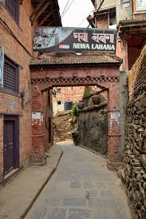

ラハナは2000年に設立されたネパールの有名なレストランで、カトマンズのクリチプールと呼ばれる有名な場所にあります。ラハナでは典型的なネワリ料理を見つけることができます。家族との夕食に最適な場所です。レストランはそこでコミュニティによって運営されており、唇を打つ料理を提供しています。あなたがネワリ食品と肉愛好家を愛しているなら、これはあなたのための場所です。衛生は問題になる可能性があります。これはコミュニティによって運営されているため、ここでは非常に専門的なサービスを期待しないでください。価格は安く、食べ物はおいしいので、基本的に補償されます.
